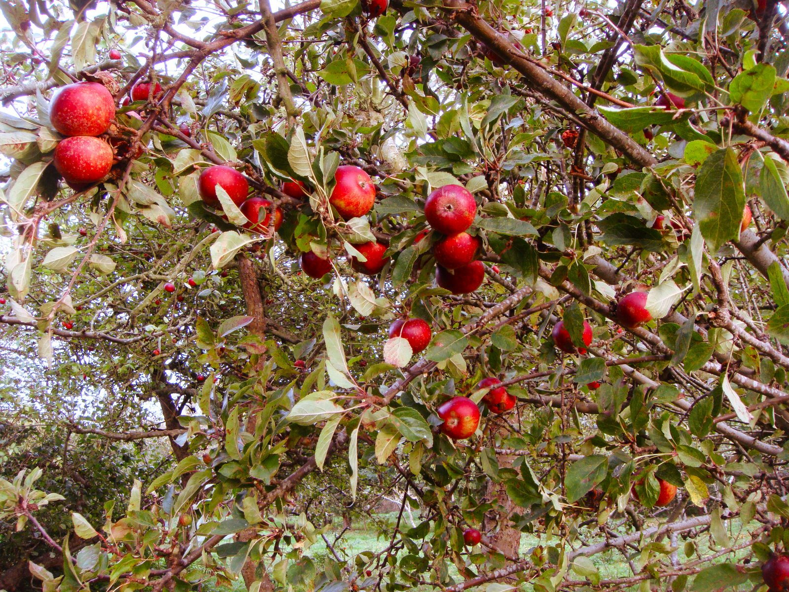

Fremtid
Et kulstofoptagende landbrug
Vi bevæger os væk fra husdyrhold og hen imod skovlandbrug — træer, buske og afgrøder dyrket sammen i lag, ligesom i en naturlig skov. Fra CO2-neutral til aktivt kulstofoptagende.

Principperne
Sådan bygger vi det
De fire principper, skovlandbruget på Stålbækgård bygger på. Detaljerne er stadig under udarbejdelse.
Trærækker & læhegn
[Tilføj detaljer om hvilke træarter og hvor mange rækker]
Afventer detaljerFlerlags dyrkning
[Tilføj detaljer om hvilke lag — kron-, busk- og bundlag — I dyrker]
Afventer detaljerPermanent jorddække
[Tilføj detaljer om jordbearbejdning og dækafgrøder]
Afventer detaljerFrugt & grønt som hovedproduktion
Kirsebær, ribs og solbær sælges allerede fra Hindsholm Gårdbutik.
Vejen dertil
Hvad der mangler at blive udfyldt
Denne side er bevidst bygget med pladsholdere frem for opfundne tal. Når følgende er besluttet, kan siden opdateres med de rigtige detaljer:
- Hvor mange hektar skal omlægges til skovlandbrug, og hvornår
- Hvilke træ- og buskarter indgår i systemet
- Konkrete milepæle og datoer for de næste 3–5 år
- Hvordan "100% kulstofoptagende" måles og dokumenteres — via Your Footprint